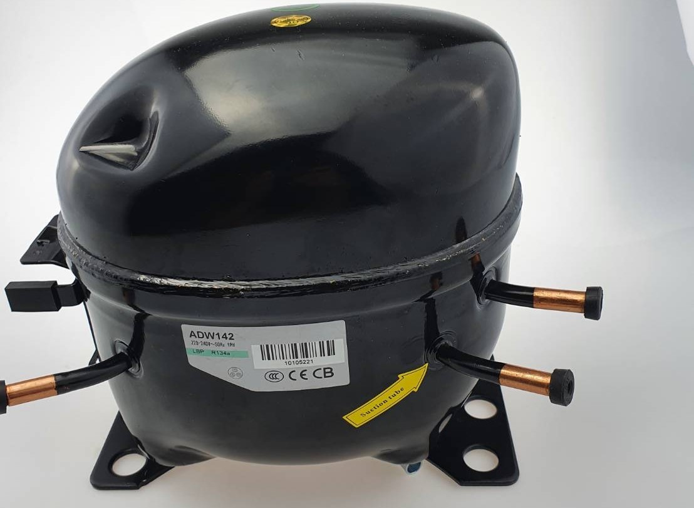
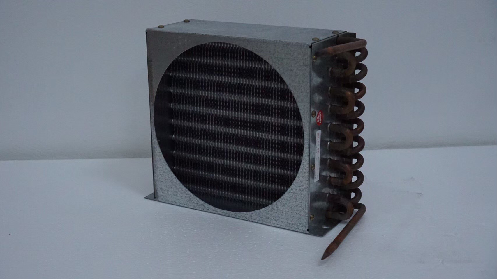
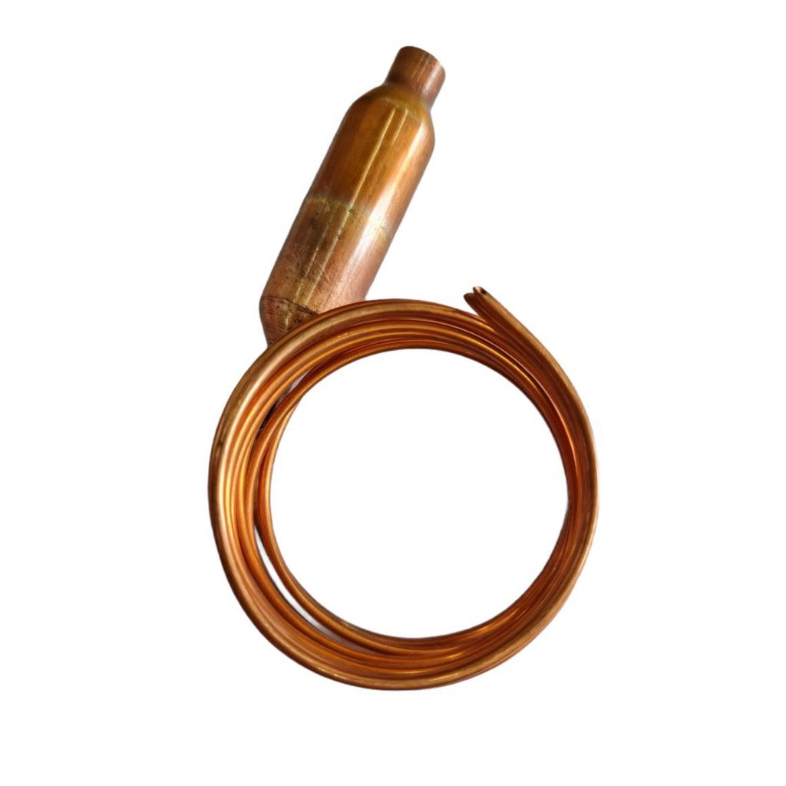
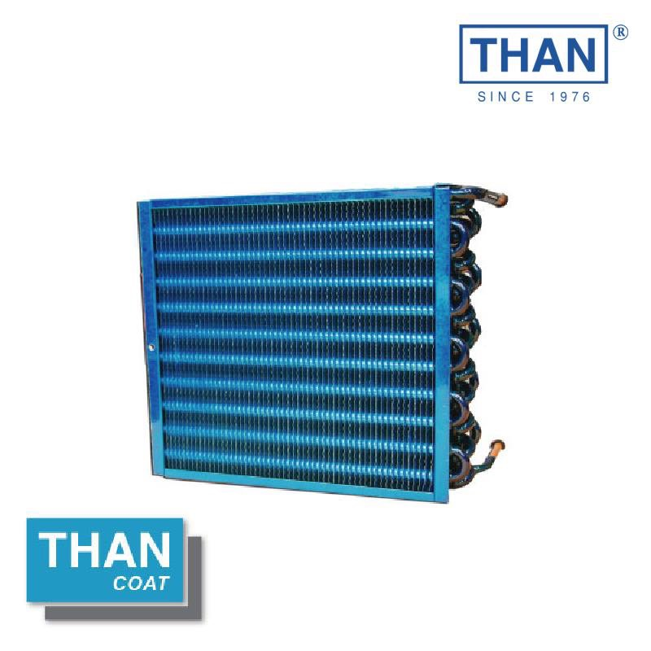

ความรู้พื้นฐานของระบบความเย็น
ระบบทำความเย็น (Refrigeration System) มีหน้าที่ในการลดและรักษาอุณหภูมิในพื้นที่ที่กำหนด โดยอาศัยหลักการของการระเหยและการควบแน่นของสารทำความเย็น (Refrigerant) เพื่อดึงความร้อนออกจากพื้นที่และระบายทิ้งออกภายนอก
วงจรการทำงานของระบบทำความเย็น
หลักการทำงานของระบบนี้ประกอบไปด้วยการเปลี่ยนสถานะและการถ่ายเทความร้อนของสารทำความเย็น (Refrigerant) ที่ไหลเวียนผ่านส่วนประกอบหลักทั้งหมดสี่ส่วน ได้แก่ คอมเพรสเซอร์ (Compressor), คอนเดนเซอร์ (Condenser), วาล์วลดความดัน (Expansion Valve), และอีแวปโพเรเตอร์ (Evaporator)
1. คอมเพรสเซอร์ (Compressor)
ซึ่งเป็นส่วนที่มีหน้าที่ดูดและอัดสารทำความเย็นจากสถานะแก๊สที่มีแรงดันต่ำและอุณหภูมิต่ำให้มีแรงดันสูงขึ้น กระบวนการนี้ทำให้อุณหภูมิของสารทำความเย็นสูงขึ้นด้วย เมื่อสารทำความเย็นถูกอัดจนมีแรงดันและอุณหภูมิสูง จะถูกส่งต่อไปยัง คอนเดนเซอร์ (Condenser)

2. คอนเดนเซอร์ (Condenser)
ซึ่งเป็นส่วนที่ทำหน้าที่ระบายความร้อนออกจากสารทำความเย็น เมื่อสารทำความเย็นเย็นตัวลง มันจะเปลี่ยนสถานะจากแก๊สเป็นของเหลว พร้อมสำหรับขั้นตอนต่อไป สารทำความเย็นที่อยู่ในสถานะของเหลวนี้จะไหลต่อไปยัง วาล์วลดความดัน (Expansion Valve)

3. วาล์วลดความดัน (Expansion Valve)
ซึ่งทำหน้าที่ลดแรงดันและอุณหภูมิของสารทำความเย็นอย่างรวดเร็ว การลดแรงดันนี้จะทำให้ของเหลวมีอุณหภูมิต่ำมาก พร้อมสำหรับการดูดซับความร้อนในขั้นตอนต่อไป สารทำความเย็นที่มีอุณหภูมิต่ำจะไหลเข้าสู่ อีแวปโพเรเตอร์ (Evaporator)

4. อีแวปโพเรเตอร์ (Evaporator)
ซึ่งเป็นส่วนที่อยู่ภายในพื้นที่ที่ต้องการทำความเย็น เช่น ตู้แช่หรือตู้เย็น ภายในอีแวปโพเรเตอร์ สารทำความเย็นจะระเหยและดูดซับความร้อนจากอากาศภายใน ทำให้อุณหภูมิของพื้นที่นั้นลดลง กระบวนการนี้จะทำให้สารทำความเย็นเปลี่ยนสถานะกลับมาเป็นแก๊สอีกครั้ง และไหลกลับไปยังคอมเพรสเซอร์เพื่อเริ่มต้นวงจรการทำงานใหม่
